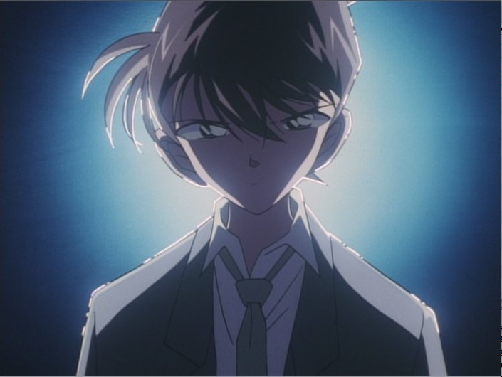

Kudo Shinichi (Jimmy Kudo) is a high school detective in Teitan High School. He specializes in solving murder cases. He is well-known by many professionals, including law enforcement officials. Shinichi’s father, Kudo Yusaku is a mystery writer. Shinichi’s mother, Kudo Yukiko, is a movie star. In Tropical Land Theme Park, Shinichi encounters two men from a secret criminal organization who force feed him a strange poison that causes his body to shrink back to first grade age. Kudo Shinichi later adopts the name Edogawa Konan to disguise his identity from the criminal organization.
